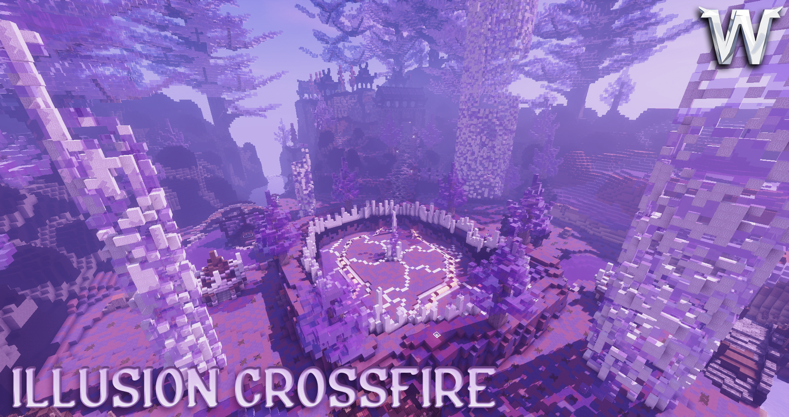
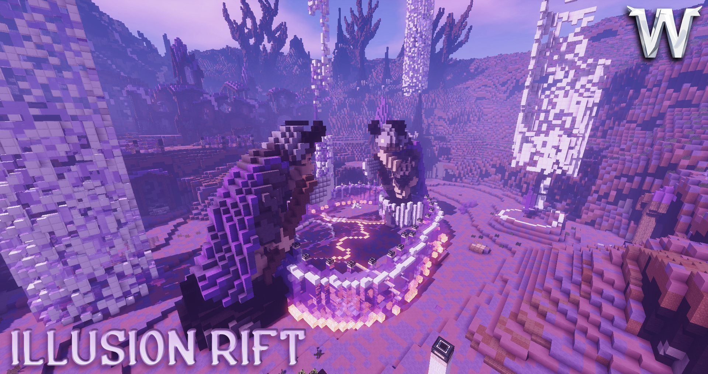
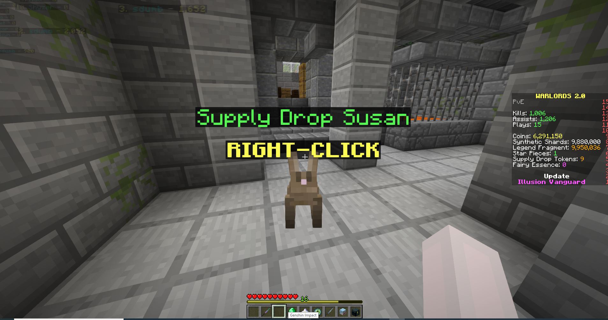
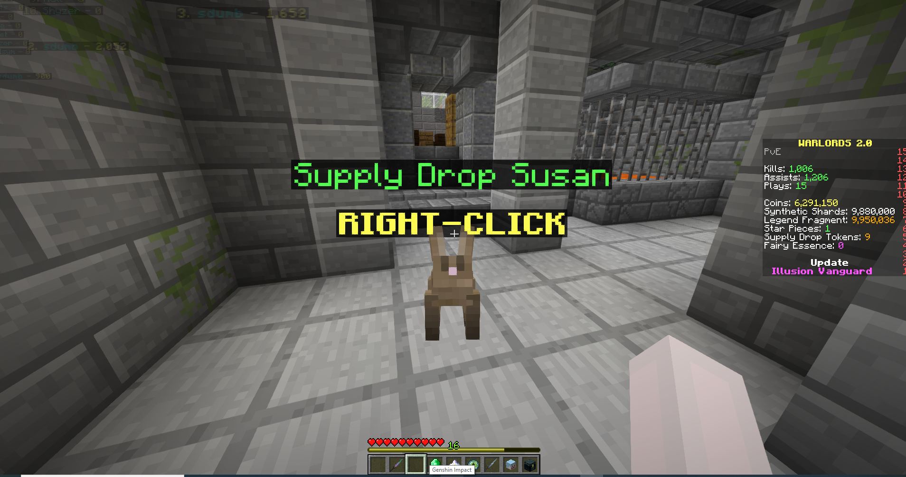
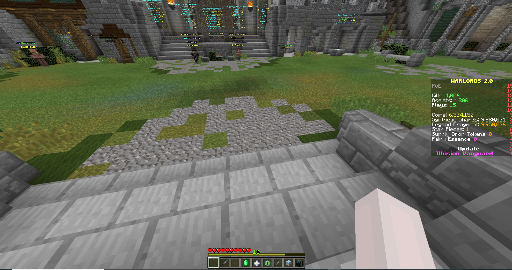
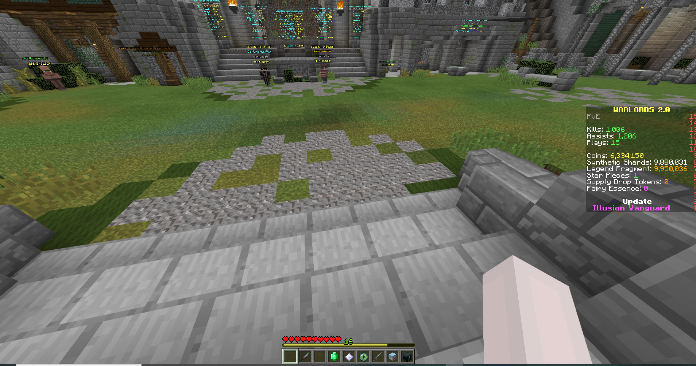
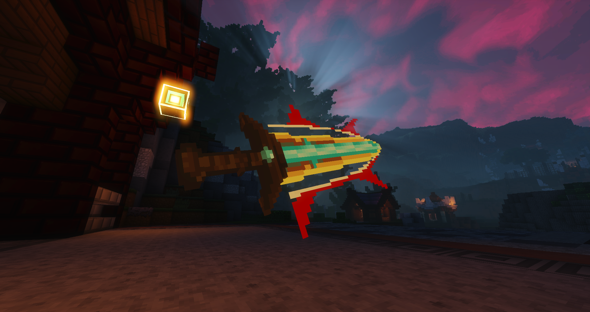
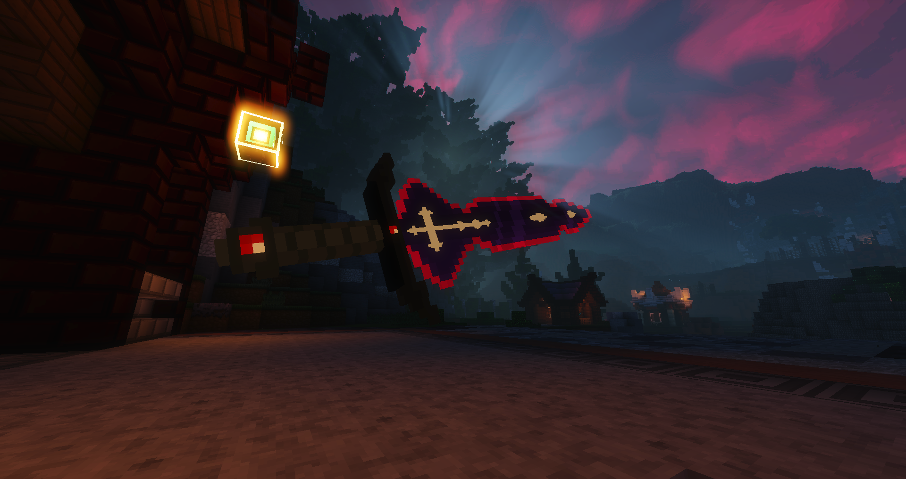

Ever wonder how Warlords would look like with PvE? We humbly present to you our edition of Warlords PvE.
The following patch notes will provide a simple introduction to the various features introduced with PvE. Further information on PvE can be found in the Warlords 2 PvE Documentation. You can navigate the documentation using the sidebar to your left on desktop, or by using the hamburger on mobile devices. (yes it sucks on mobile I know :shrug)
Wave Defense is the first PvE gamemode released on Warlords 2. The main objective is to beat waves of enemies by killing them all.
To play the new gamemode, simply click the Wave Defense NPC in the front of the lobby to join a game.
The maximum number of players is 4 per game, although you can play the game with less players. It is highly suggested that you play the mode with 4 players.
The new wave defense gamemode comes with 3 sub modes:
Normal
The normal mode comes with the most basic, classical experience. Survive 25 waves of onslaught from the blighted mobs to secure your victory… for now.
Hard
The bosses have recuperated and are now back with a vengeance. Your objective is still to survive 25 waves, but mobs will now have 50% more HP, deal 50% mode damage, and have additional abilities. As this mode is still unpolished, we will be disabling it for now.
Endless
With this gamemode, there is no end in sight. Kill as many enemies as you can to reach waves of mobs that your fellow players have never seen before!
Wave Defense features in-game upgrades, which are bought with Insignia obtained from killing mobs and the end of rounds. More information can be found here.
When each game ends, you will be rewarded handsomely according to your performance. Rewards include Coins, Guild Coins (if you’re in a guild), Spec/Class/Universal EXP and weapons. More information on each item will be found below.


Ever get a great roll on a weapon but have no use for it? The Masterworks Fair is here to allow you to flex your perfect common rolls and earn rewards for such perfection.
The Masterworks Fair lasts a week and ends upon server reset every Monday. Participants compete by trying to submit the weapon with the highest weapon score. There are three categories of weapons, Common, Rare and Epic. Players can participate in all three categories at once. After the conclusion of each Masterworks Fair, players earn rewards based on their weapon’s placement compared to other players.
 

Supply Drop Susan is essentially a lucky draw. You may roll rewards from Susan once per token. Tokens are obtained as rewards from the Masterworks Fair, every 10 levels of Spec Rewards, and if you have a ton of extra coins, you could purchase Susan tokens at 10k per token.
 

You now can earn rewards while you level up your favorite specs! Rewards primarily consist of Coins and Synthetic Shards, but occasionally you will be rewarded with Fairy Essence and Susan tokens too. Level Rewards can be accessed by clicking your skull in the 8th slot of your hotbar.
Achievement hunters can rejoice, for that Achievements have finally arrived in Warlords 2. Truth be told, we created some achievements for PvP but thought it wasn’t so suitable to be implemented within competitive play as some people might throw for the achievements. We also wanted the achievements out with public games release, but the ship had already sailed on that by the time we came around with achievement ideas. With PvE, we have been given the perfect opportunity to release achievements.
There are two types of achievements, being challenge and tiered. Challenge achievements are generally one-time endeavors while tiered achievements are based on cumulative stats. Certain challenge achievements have their description obfuscated as a surprise for players, and their achievement descriptions will be displayed once you unlock the achievement. Feel free to share the content of hidden achievements once anyone has unlocked the achievement.
We anticipate further refining the concept of achievements in the future, so stay tuned on this!
Obtaining Weapons
Weapons are dropped randomly by mobs. Only common, rare and epic weapons can be dropped by mobs. Mob-dropped weapons have randomized stats and therefore have a weapon score.
Legendary weapons are craft/redeemed only and have fixed stats. Titles can be applied to legendary weapons to modify their stat distribution.
Synthetic ShardsThis is the basic currency for upgrading weapons. Salvaging weapons will award Synthetic Shards. Synthetic Shards are the main cost for upgrading weapons.
Legend FragmentsLegend Fragments are needed to upgrade your legendary weapon. You can accumulate legend fragments by playing games with your legendary weapon equipped.
Star PiecesStar Pieces can be applied on legendary weapons to upgrade a singular, random stat by 20%/30%/40%, depending on if the star piece is Common/Rare/Epic. Star Pieces are consumables and will be destroyed upon usage. You can apply a star piece on a weapon that already has a stat boosted. This will reroll the stat that the Star Piece boosts.
Star Pieces are mainly obtained as a reward for placing in the top 3 in the Masterworks Fair, more details on this right below. If you’re lucky, you could also get Star Pieces from Susan!
Players can create a guild by paying 500k coins as long as they clear any PvE mode (Normal + Hard) 20 times. Guilds offer some amazing perks that can help boost the quality of gameplay and speed up your progression. We will likely have guild-based events in the near future, so stay tuned!
Coins
Coins are the generic currency for PvE in Warlords 2 and are involved in many transactions within PvE. Coins will be rewarded after the completion of every game. Coins can also be obtained from leveling rewards, which you can read about further down this document.
Guild CoinsGuild coins are earned if you are in a guild. You will be awarded a base of 2% of your coin gain per game as Guild coins. Guild coins can be used to purchase temporary and permanent upgrades. Active upgrades will boost all members currently in the guild. You can explore guild upgrade options in /g menu while you’re in a guild.
Fairy EssenceFairy Essence is used to unlock weapon skins. Once a weapon skin is unlocked, you can pick that skin with no additional cost in the future even if you swap it off. If you’re in dire need of Fairy Essence, consider subscribing to our Patreon… or… consult Susan??
Team Deathmatch Maps
- Ruins
- Siege
- Falstad Gate
- Black Temple
- Stormwind
This update has also brought 2 new skins!
 Energy Powerup
- Energy increase: 40% -> 50%
Chain Heal
- Removed healing reduction on last bounce
Prism Guard received a small rework as voted in by the playerbase.
Prism GuardCooldown: 24s -> 26s
Create a bubble shield around you that lasts 6 seconds. All projectiles that pass through the barrier have their damage reduced by 75%. After 6 seconds the bubble will burst, healing all allies for 200 + [1.5% missing health * HITS] health and grant [3% * HITS] damage reduction (up to 30%) for 6 seconds.
HITS = Each damage instance (both melee and ability) you took from an enemy while your Prism guard was active.
Nearly all skill boosts have had a small overhaul to either stat or overall functionality.
Pyromancer- Flame Burst
- Arcane Shield
- Inferno
- Frostbolt
- Freezing Breath
- Time Warp
- Arcane Shield
- Ice Barrier
- Water Breath
- Arcane Shield
- Wounding Strike
- Seismic Wave
- Ground Slam
- Blood Lust
- Berserk
- Wounding Strike
- Intervene
- Last Stand
- Crippling Strike
- Reckless Charge
- Orbs of Life
- Undying Army
- Avenger's Strike
- Consecrate
- Light Infusion
- Holy Radiance / Avenger's Mark
- Avenger's Wrath
- Consecrate
- Light Infusion
- Holy Radiance / Crusader's Mark
- Inspiring Presence
- Protector's Strike
- Consecrate
- Light Infusion
- Hammer of Light
- Chain Lightning
- Windfury Weapon
- Capacitor Totem
- Spirit Link
- Soulbinding Weapon
- Death's Debt
- Earthen Spike
- Boulder
- Chain Heal
- Healing Totem
- Added flag message toggle (you can now swap between "YOUR/ENEMY" or BLUE/RED flag messages.) - Requested by shart#2149
- Added total melee hits in the end of game summary - Requested by SmrtDiskordu#9887
- Fixed flags sometimes dropping in the Lobby during warp back
- Fixed teammates affected by Last Stand granting the Defender slightly too much healing due to a calculcation error
- Fixed typo in Death's Debt description
Coding: Plikie, sumSmash and Ferrybig
PvE Game Design: Flare, Plikie, sumSmash and Balancing Team
PvE Maps: Godcipe and Plikie
Trailer: MrSoupy07
Image Rendering: pekk
Update Banner: Melowo